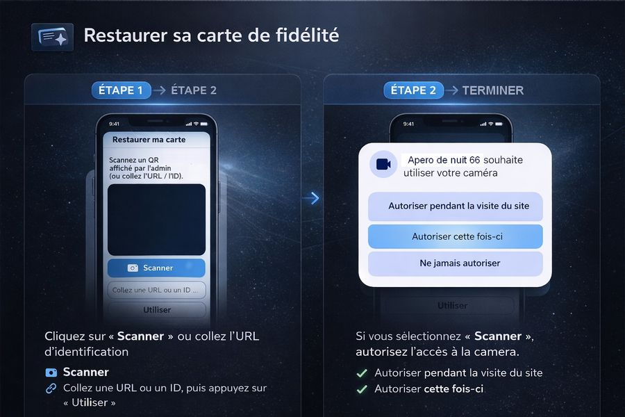
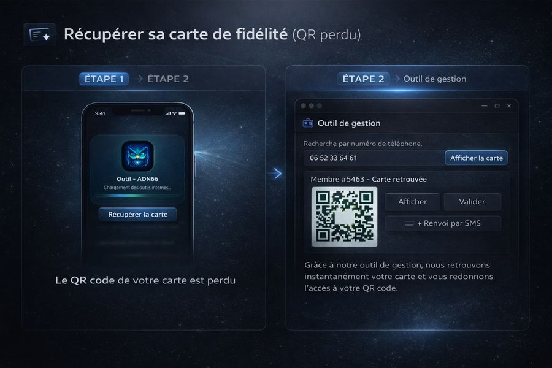
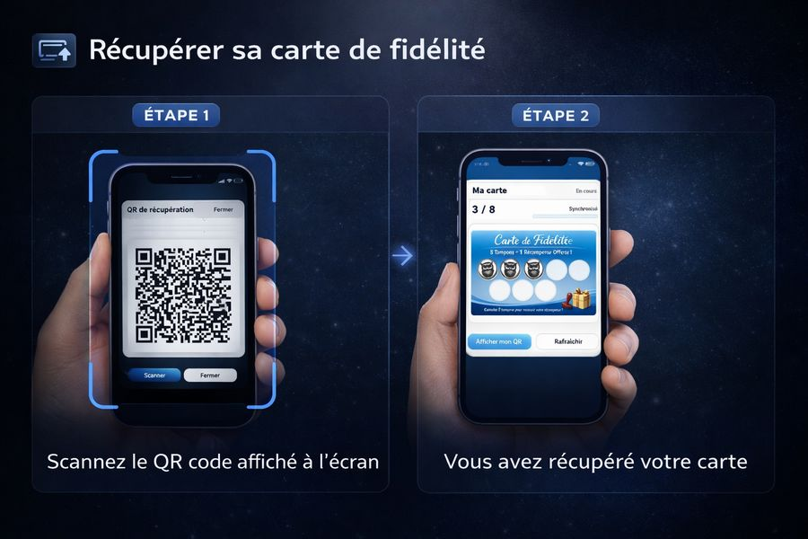

Restaurer avec un QR / URL / ID
Scannez votre QR (ou collez l’URL / l’ID) : la carte est restaurée instantanément.

Étape 1/2
- Ouvrez Restaurer ma carte.
- Appuyez sur Scanner et filmez votre QR ou collez l’URL / l’ID.
- Appuyez sur Utiliser si vous avez collé une URL / ID.
Conseil : placez le QR bien à plat et évitez les reflets.
1/2
Restaurer avec un QR / URL / ID
Votre carte s’affiche automatiquement après le scan / l’ID.

Étape 2/2
- Patientez une seconde : votre carte apparaît automatiquement.
- Vous pouvez fermer cette fenêtre et continuer normalement.
OK : votre carte est maintenant enregistrée sur ce téléphone.
2/2
Mettre ma carte sur un autre téléphone
La carte sera enregistrée sur les deux appareils.

Étape 2/2
- Sur le téléphone 2, appuyez sur Scanner puis scannez le QR affiché sur le téléphone 1.
- La carte sera enregistrée sur les deux téléphones.
OK : vous pouvez utiliser votre carte depuis les deux appareils.
2/2
Récupérer ma carte (QR perdu)
Le livreur retrouve votre QR via l’outil interne, puis vous le scannez pour restaurer votre carte.

Étape 1/2
- Expliquez au livreur que vous avez perdu votre QR.
- Le livreur ouvre l’outil interne de gestion.
- Il recherche votre carte avec votre numéro de téléphone et affiche votre QR de récupération.
Sécurité : seul le livreur a accès à cet outil. Il sert uniquement à vous redonner votre QR.
1/2
Récupérer ma carte (QR perdu)
Scannez le QR de récupération affiché par le livreur.

Étape 2/2
- Sur votre téléphone, ouvrez Restaurer ma carte.
- Appuyez sur Scanner puis scannez le QR affiché par le livreur.
- Votre carte est restaurée immédiatement.
OK : votre carte est de nouveau enregistrée sur ce téléphone.
2/2